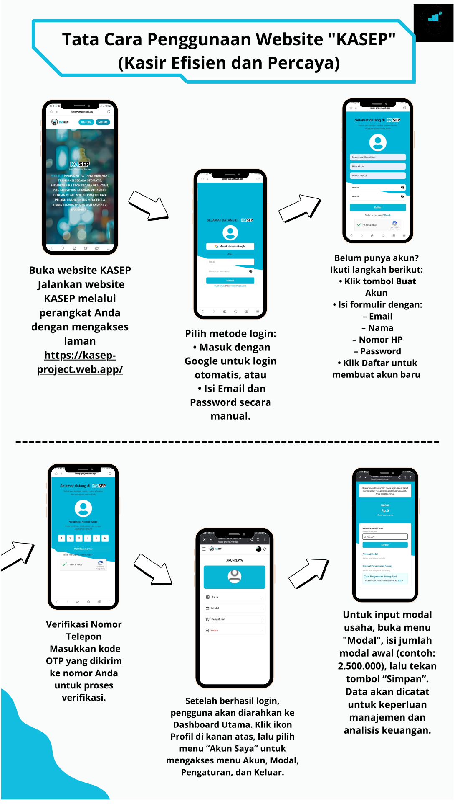

Panduan Penggunaan Kasep


Video Tutorial
Panduan Kasep Versi Desktop: Video ini menjelaskan langkah-langkah penggunaan aplikasi Kasep pada perangkat desktop secara lengkap dan mudah diikuti.
Panduan Kasep Versi Mobile: Video ini memberikan panduan penggunaan aplikasi Kasep pada perangkat mobile, mulai dari login hingga fitur-fitur utama.